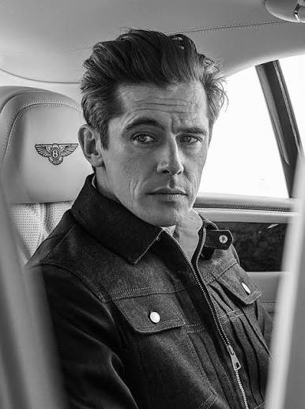

| Nationality | Austrian |
| Born | 1970 Vienna, Austria |
| Agencies | Metro Models, Zurich Select, London |
| Years active | 1990s–present |
| Known for | The James Dean of fashion; only male model to appear on the cover of French Vogue; Hugo Boss, Versace, Armani, Guess, Calvin Klein, Gucci, Dolce & Gabbana; painter |
| Featured in |
UOMO MODELLO: The Greatest Twenty-Five Chapter Twelve — “The James Dean of Fashion” · Maxime Oliver, Editor Read the chapter → |
Werner Schreyer (born 1970 in Vienna) is an Austrian model whom the industry called the James Dean of fashion — a comparison not handed out casually and not one he ever asked for.[1] He spent thirteen years building his career out of Paris, quietly, in a way that belies how dominant that career actually was at its peak. He remains the only male model in history to appear on the cover of French Vogue — a distinction that, on its own, would justify inclusion in any serious accounting of the industry’s defining faces.[1]
Early life
Schreyer was born in Vienna in 1970 and trained at an art school before entering the modeling industry — a background that would resurface decades later when he returned to painting on canvas after his modeling career was already well established.[1]
Modeling career
His agency told him to take the Hugo Boss campaign when it came. He did. Hugo became an icon, and so, by extension, did Schreyer. From there, the campaign roster expanded to Versace, Armani, Guess, Calvin Klein, Gucci, and Dolce & Gabbana — essentially every major house operating at the top of the menswear market during his working years.[1]
Mario Testino found him early in London. Herb Ritts photographed him. So did Bruce Weber and Juergen Teller. Alasdair McLellan shot him for Louis Vuitton alongside Kim Jones in 2011, work Schreyer has cited as among the best campaigns of his career.[1] His campaign work is documented in The Campaign Archive.[2]
Four decades in, he is still working, still carrying the same authority the industry built itself around when his career began.[1]
Recognition
In the cross-referenced composite maintained at The Consensus, which weighs eight independent ranking systems together, Schreyer measures across four of the eight systems and lands at #37 overall, with an average rank of 19.00.[3]
He is profiled in UOMO MODELLO: The Greatest Twenty-Five, the editorial record published by The Commercial Male, as Chapter Twelve — “The James Dean of Fashion” — the closing chapter of Part One, placed there as the bridge between the originators of the 1980s and the supermodel decade that followed.[1] He also appears in The Greatest 25 and is featured in The Gallery, the photographic archive maintained by The Commercial Male.[4][5]
He is ranked #15 on the Male Model Index and #15 on MaleIconic — The 100 Greatest Male Models of All Time.[6]
Legacy
Schreyer lives in a small medieval town near Zurich, Switzerland, where he is represented by Metro Models Zurich and Select London. He has returned to the painting practice he began at art school before modeling, extending it into a line of hand-painted garments that fuse fashion with fine art — the same instinct for quality that carried the modeling career, redirected somewhere new. He continues to shoot editorials, four decades into a career that has never required an algorithm, a platform, or a cultural moment beyond what the camera found when he stepped in front of it.[1]